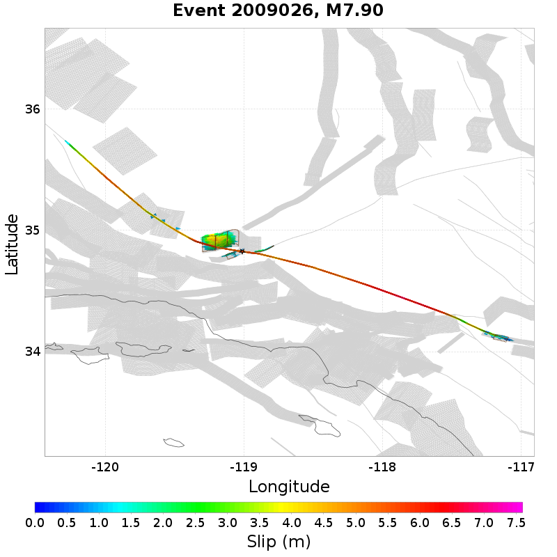
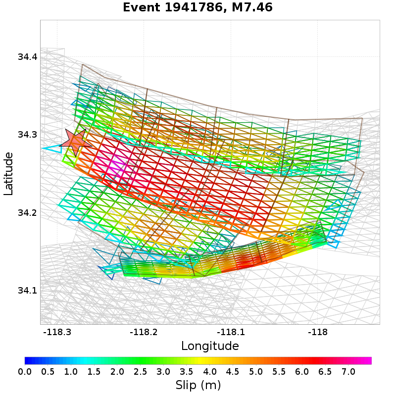
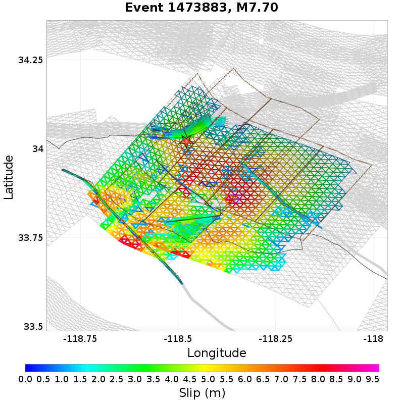
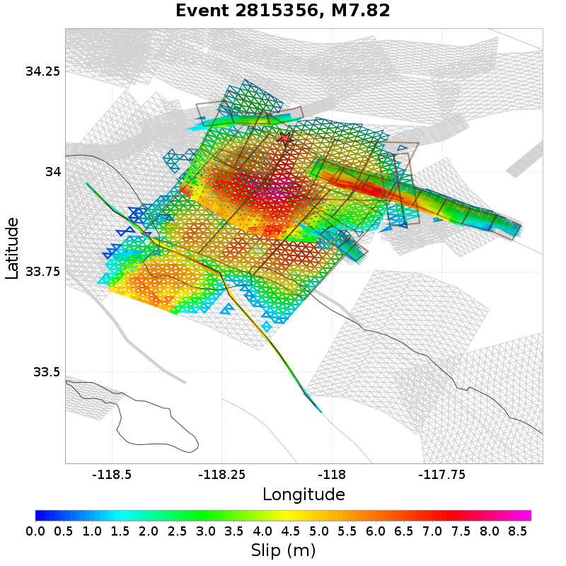
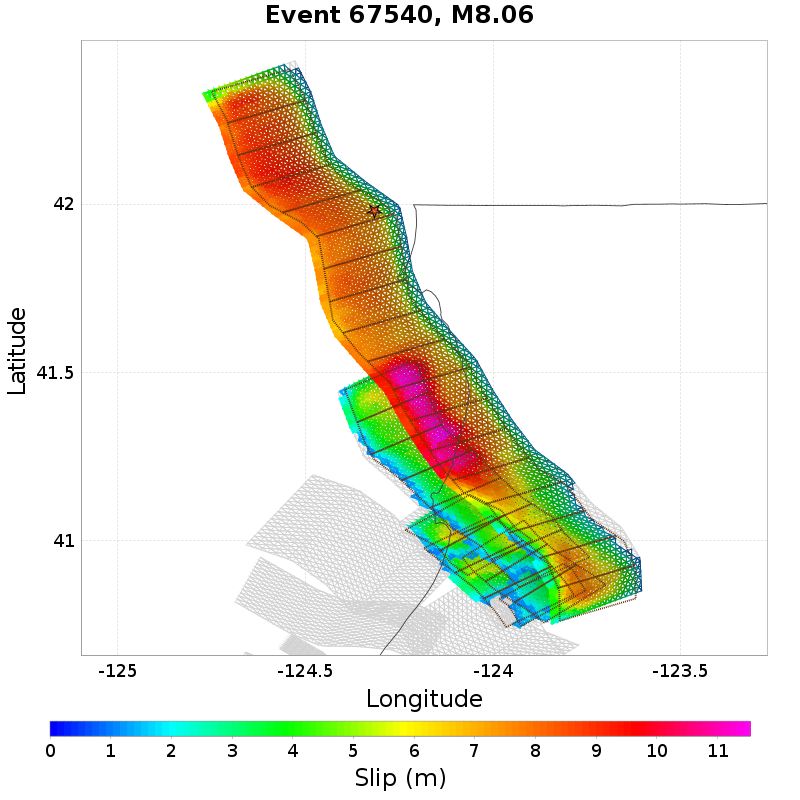
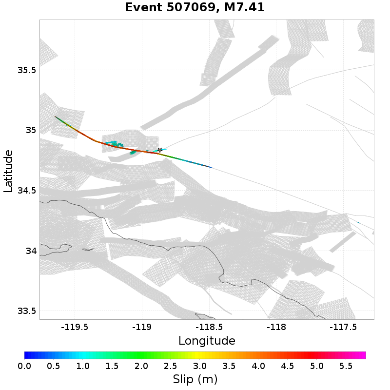

Subsections participate in a rupture if at least 20.0 % of its area ruptures
Total count of mapped UCERF3 subsections (e.g. SAF Mojave S Subsection 3), after application of minimum subsection area filter
| Event ID | Subsection Count | Plot |
|---|---|---|
| 1569279 | 87 (Subsection[s]) |  |
| 183748 | 85 (Subsection[s]) |  |
| 2603034 | 84 (Subsection[s]) |  |
| 729881 | 80 (Subsection[s]) | |
| 294512 | 79 (Subsection[s]) |  |
Total count of mapped UCERF3 subsections (e.g. SAF Mojave S), after application of minimum subsection area filter
| Event ID | Parent Section Count | Plot |
|---|---|---|
| 1441473 | 11 (Section[s]) |  |
| 1907145 | 11 (Section[s]) | |
| 2804459 | 11 (Section[s]) | |
| 2009026 | 11 (Section[s]) |  |
| 1918472 | 11 (Section[s]) |
Ratio of the total rupture length (UCERF3 mapped subsection rupture) to the idealized length, defined as the straight line distance between the furthest 2 subsections

| Event ID | Mapped Length Ratio | Plot |
|---|---|---|
| 2615283 | 3.32 |  |
| 2211721 | 3.25 | |
| 1941786 | 3.22 |  |
| 1473883 | 3.21 |  |
| 1800592 | 3.14 |  |
Total rupture length (UCERF3 mapped subsection rupture) minus the idealized length, defined as the straight line distance between the furthest 2 subsections

| Event ID | Mapped Excess Length | Plot |
|---|---|---|
| 2815356 | 192.03 (km) |  |
| 67540 | 175.73 (km) |  |
| 2473876 | 174.66 (km) |  |
| 1918472 | 166.24 (km) | |
| 2910933 | 149.59 (km) |  |
Moment of simulator elements not included in mapped UCERF3 subsection rupture

| Event ID | Moment Off Mapped Rupture | Plot |
|---|---|---|
| 1042766 | 1.9101464E19 (N-m) |  |
| 1977278 | 1.7182936E19 (N-m) | |
| 1139182 | 1.4564559E19 (N-m) |  |
| 1350622 | 1.4463234E19 (N-m) |  |
| 2141821 | 1.4451382E19 (N-m) |  |
Event Moment Magnitude
| Event ID | Magnitude | Plot |
|---|---|---|
| 67540 | 8.06 | |
| 1110177 | 8.03 |  |
| 2473876 | 8.01 | |
| 1569279 | 7.98 | |
| 183748 | 7.98 | |
Moment that is at least 100km from the nearest mapped subsection (after application of subsection area threshold)
2 events above threshold of 1 [N-m]

| Event ID | Moment >100km from Mapped | Plot |
|---|---|---|
| 2385784 | 9.17692E16 (N-m) | |
| 507069 | 2.7545631E16 (N-m) |  |